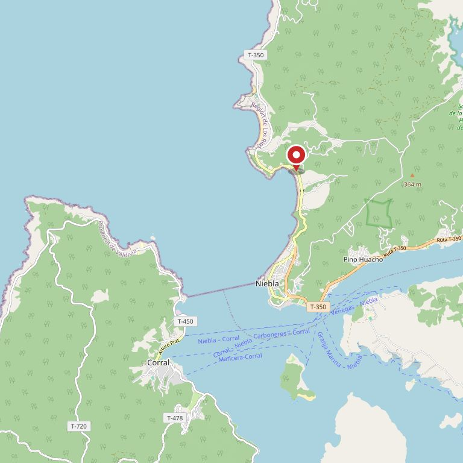

Restaurante · Los Molinos, costa de Valdivia
El mar no
tiene carta
fija
Lo que hay depende de la época, de la veda y de si salió el bote. Nadie lo dice por escrito, así que la gente llama para preguntar —o no viene. Acá está el calendario.
- 219 reseñas en Google Verificado el 21-08-2026. Público tienen: el problema no es que no los conozcan.
- 6 productos con calendario acá Chorito, algas, loco, macha, erizo y el pescado del día, cada uno con sus doce meses a la vista.
- 3 fotos suyas en todo internet Las tres de su ficha. Ninguna muestra la vista, y en las dos de la fachada el quitasol tapa la mitad del letrero.
- 0 teléfonos publicados Quien quiere reservar hoy no tiene dónde escribir. Ésta es la herida y se arregla en una tarde.
La nota promedio existe y no se publica acá a propósito: en una página de venta se habla del volumen, no del puntaje.


La pregunta de todos los días
¿Qué hay
del mar hoy?
Una fila por producto. Lo que se ve cerrado es su calendario: doce letras, un mes cada una. Se abre la fila para leer el detalle.
- es su temporada
- hay, pero no es su mejor época
- manda la veda
- falta confirmar
-
Chorito EFMAMJJASOND todo el año
Es de cultivo, así que no depende de la suerte del día: hay todo el año. Lo que sí cambia es cuánto rinde la carne según la época —después del desove el chorito queda más flaco y se nota en el plato.
falta: en qué meses lo prefieren ustedes — el que compra sabe cuándo viene mejor, y decirlo es exactamente el tipo de dato que hace volver a un cliente.
-
Cochayuyo y luche EFMAMJJASOND verano
Las algas se sacan a mano en las bajamares grandes del verano, cuando la roca queda al descubierto. Por eso la temporada es de noviembre a marzo: no es una decisión de la cocina, es cuándo se puede llegar a la piedra.
falta: si trabajan con recolector de la zona — si el alga es de acá y tiene nombre y apellido, eso se dice y vale más que cualquier foto.
-
Loco EFMAMJJASOND manda la veda
El loco no se rige por temporada sino por veda: sale cuando hay apertura autorizada en un área de manejo, y el resto del tiempo no hay. Así de simple y así hay que decirlo.
falta: si este año les llega y desde cuándo — las fechas de apertura las fija la autoridad y cambian, por eso esta página no publica ninguna. En veda se respeta la veda.
-
Macha EFMAMJJASOND manda la veda
Igual que el loco: hay veda y cambia según la zona y el año. Un restaurante que dice de frente «hoy no hay porque está en veda» gana más confianza que uno que sirve sin explicar de dónde salió.
falta: confirmar los meses que corresponden a esta zona — no se inventan.
-
Erizo EFMAMJJASOND falta
Tiene veda reproductiva y las fechas cambian según la región. Esta página deja el calendario en blanco a propósito: publicar meses equivocados sería peor que no publicar nada.
falta: cuándo lo tienen ustedes — con eso la fila se llena en un minuto.
-
El pescado del día EFMAMJJASOND según el bote
No depende del mes: depende de si el mar dejó salir esa mañana. Hay días de invierno con mejor pescado que en pleno enero, y semanas de temporal en que sencillamente no hay.
Ésta es la fila que conviene actualizar: una línea escrita en la mañana —«hoy hay congrio»— vale más que toda la carta. falta: definir quién la escribe
Por qué esta página no publica fechas de veda. Las vedas las fija la autoridad, cambian de año en año y de zona en zona. Una página con fechas viejas hace que el cliente llegue a pedir algo que no puede haber. Por eso acá se dice lo único que no caduca: en veda se respeta la veda, y lo que hay hoy lo confirma el local.
Lo que decide qué hay
Mandan cinco cosas,
y ninguna es la cocina
El calendario de arriba no es una decisión del local: es lo que pasa afuera. Estas cinco explican por qué la respuesta cambia de un día para otro —y por qué preguntar «¿qué tienen?» nunca sirve de nada.
-
La temporada
Un marisco no está igual todo el año. Después del desove queda flaco y rinde menos en el plato. Eso no lo decide nadie: es el bicho.
-
La veda
La fija la autoridad pesquera y cambia de zona en zona y de año en año. Mientras dura, no hay. No es una excusa del local: es lo que hace que el año siguiente todavía queden.
-
El cultivo
El chorito viene de línea, colgado en el agua y cosechado cuando toca. Por eso es el único de la lista que no depende de la suerte del día.
-
El bote
El pescado del día es literalmente eso. Si el mar no dejó salir en la mañana no hay, y no hay nada que la cocina pueda hacer al respecto.
-
La bajamar
El cochayuyo y el luche se sacan a mano cuando la marea deja la roca al descubierto. Su temporada no es un gusto: es cuándo se puede llegar a la piedra.
Por eso la pregunta que llega por teléfono nunca es «qué tienen». Es qué hay hoy — y hoy esa pregunta sólo se puede contestar llamando.
Lo que cuesta un minuto al día
Una línea escrita
en la mañana
El calendario de arriba casi no cambia: se escribe una vez y queda puesto. Lo que cambia todos los días es una sola frase, y hoy esa frase no está escrita en ninguna parte.
Hoy en Mis Raíces
falta: la escribe el local, cada mañana
Es el único renglón de esta página pensado para cambiar todos los días. Quién lo escribe y cómo se actualiza es la primera conversación que hay que tener, y no la decide una página web.
- Una frase, no tres. Si hay que sentarse a redactar, no se escribe ningún día.
- Desde el teléfono, mientras se descarga la caja. No hace falta computador ni que la suba otra persona.
- Los días malos también. «Hoy no salió el bote» es información, y es justamente la que hace que el cliente vuelva a mirar mañana.

La foto que ya tienen y explica el lugar
La terraza da a la calle, y la calle da al mar
Los Molinos es un camino angosto entre el cerro y el agua, y quien maneja por ahí decide en dos segundos dónde parar. Esta terraza con quitasol es lo que se ve desde el auto, y no está en su ficha de Google. Subirla es gratis. Lo otro que falta —y vale más— es la foto de lo que se ve DESDE la terraza: eso no lo puede poner ninguna imagen prestada.

Lo que hay hoy salió hoy
Y si no salió el bote, se dice y punto
Lo segundo que preguntan
La mesa
con vista
Alguien que maneja hasta la costa no viene sólo a comer: viene a comer mirando. Y eso, que es la mitad del argumento, hoy no está escrito en ninguna parte.
- Qué se ve desde la mesa
- falta: describirlo en una línea No hace falta adornarlo. «Se ve el mar y la bahía» ya es más de lo que hay hoy. Lo que no se puede es inventarlo: si la vista es parcial, se dice parcial.
- Cuántas mesas tienen vista
- falta Si son pocas, decirlo hace que la gente reserve en vez de llegar y encontrarlas ocupadas.
- Si hay terraza y si sirve con viento
- falta En la costa el viento decide. Una línea honesta —«la terraza se usa cuando el día acompaña»— evita una reseña mala.
Cómo llegar

El punto es el sector, no la puerta: se llega por el camino de la costa pasando Niebla. falta: la dirección exacta, y la pone el local.
Mapa: © OpenStreetMap contributors Cómo llegar
- Dirección exacta
- falta Los Molinos es chico, pero el que viene de afuera necesita el punto en el mapa, no el nombre del pueblo.
- Cuánto se demora desde Valdivia
- falta Este dato no lo pongo yo. Un tiempo de viaje inventado es la clase de error que se paga con un cliente enojado llegando tarde a su reserva.
- Dónde estacionar
- falta En verano, en la costa, es una pregunta real.
Reservar
Diga cuándo y cuántos son: el mensaje se arma solo.